All biological membranes share certain fundamental properties. They are impermeable to most polar or charged solutes, but permeable to nonpolar compounds; are 5 to 8 nm thick; appear trilaminar (threelayered) when viewed in cross section with the electron microscope (see Fig. 10-1). The combined evidence from electron microscopy, chemical composition, and physical studies of permeability and of the motion ofindividual protein and lipid molecules within membranes supports the fluid mosaic model for the structure of biological membranes (Fig. 10-4). Amphipathic phospholipids and sterols form a lipid bilayer, with the nonpolar regions of lipids facing each other at the core of the bilayer and their polar head groups facing outward. In this lipid bilayer, globular proteins are embedded at irregular intervals, held by hydrophobic interactions between the membrane lipids and hydrophobic domains in the proteins. Some proteins protrude from one or the other face of the membrane; most span its entire width. The orientation of proteins in the bilayer is asymmetric, giving the membrane "sidedness"; the protein domains exposed on one side of the bilayer are different from those exposed on the other side, reflecting functional asymmetry. The individual lipid and protein subunits in a membrane form a fluid mosaic; its pattern, unlike a mosaic of ceramic tile and mortar, is free to change constantly. The membrane mosaic is fluid because the interactions among lipids, and between lipids and proteins, are noncovalent, leaving individual lipid and protein molecules free to move laterally in the plane of the membrane.
We will now look at some of these features of the fluid mosaic model in more detail, and consider the experimental evidence that supports it.
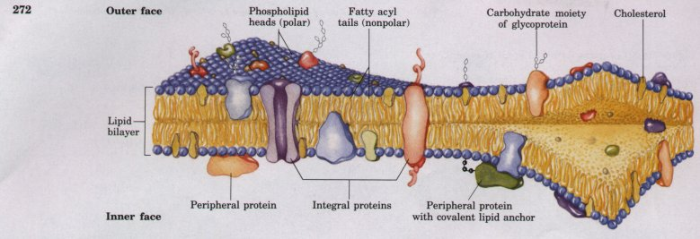
Figure 10-4 The fluid mosaic model for membrane structure. The fatty acyl chains in the interior of the membrane form a fluid, hydrophobic region. Integral membrane proteins float in this sea of lipid, held by hydrophobic interactions with their nonpolar amino acid side chains. Both proteins and lipids are free to move laterally in the plane of the bilayer, but movement of either from one face of the bilayer to the other is restricted. The carbohydrate moieties attached to some proteins and lipids of the plasma membrane are invariably exposed on the extracellular face of the membrane.
| We saw in Chapter 9 that lipids, when
suspended in water, spontaneously form bilayer structures
that are stabilized by hydrophobic interactions (see Fig.
9-14). The thickness of biological membranes (5 to 8 nm,
measured by electron microscopy) is about that expected
for a lipid bilayer 3 nm thick with proteins protruding
on each side. X-ray diffraction by membranes shows the
distribution of electron density expected for a bilayer
structure. Liposomes (lipid vesicles) formed in the
laboratory show the same relative impermeability to polar
solutes as is seen in biological membranes (although the
latter are permeable to solutes for which they have
specific transporters). In short, all evidence indicates
that biological membranes are constructed of lipid
bilayers. Membrane lipids are asymmetric in their distribution on the two faces of the bilayer, although the asymmetry, unlike that of membrane proteins, is not absolute. In the plasma membrane, for example, certain lipids are typically found primarily in the outer face of the bilayer, and others in the inner (cytoplasmic) face (Fig. 10-5). |
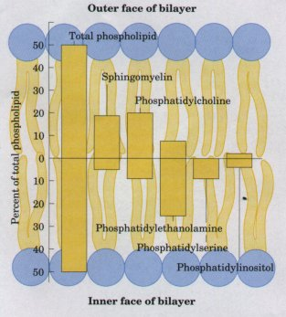 Figure10-5 The distribution of specific erythrocyte membrane lipids bitween the inner and outer face is asymmetric. |
| Although the lipid bilayer structure
itself is stable, the individual phospholipid and sterol
molecules have great freedom of motion within the plane
of the membrane (Fig. 10-6). They diffuse laterally so
fast that an individual lipid molecule can circumnavigate
an erythrocyte in a few seconds. The interior of the
bilayer is also fluid; individual hydrocarbon chains of
fatty acids are in constant motion produced by rotation
about the carbon-carbon bonds of the long acyl side
chains. The degree of fluidity depends on lipid composition and temperature. At low temperature, relatively little lipid motion occurs and the bilayer exists as a nearly crystalline (paracrystalline) array. Above a temperature that is characteristic for each membrane, lipids can undergo rapid motion. The temperature of the transition from paracrystalline solid to fluid depends upon the lipid composition of the membrane. Saturated fatty acids pack well into a paracrystalline array, but the kinks in unsaturated fatty acids (see Fig. 9-1) interfere with this packing, preventing the formation of a paracrystalline solid state. The higher the proportion of saturated fatty acids, the higher is the solid-to-fluid transition temperature of the membrane. The sterol content of a membrane also is an important determinant of this transition temperature. The rigid planar structure of the steroid nucleus, inserted between fatty acyl side chains, has two effects on fluidity: below the temperature of the solid-to-fluid transition, sterol insertion prevents the highly ordered packing of fatty acyl chains, and thus fluidizes the membrane. Above the thermal transition point, the rigid ring system of the sterol reduces the freedom of neighboring fatty acyl chains to move by rotation about carbon-carbon bonds, and thus reduces the fluidity in the core of the bilayer. Sterols therefore tend to moderate the extremes of solidity and fluidity of the membranes that contain them. Both microorganisms and cultured animal cells regulate their lipid composition so as to achieve a constant fluidity under various growth conditions. For example, when cultured at low temperatures, bacteria synthesize more unsaturated fatty acids and fewer saturated ones than when cultured at higher temperatures (Table 10-3). As a result of this adjustment in lipid composition, membranes of bacteria cultured at high or low temperature have about the same degree of fluidity. |
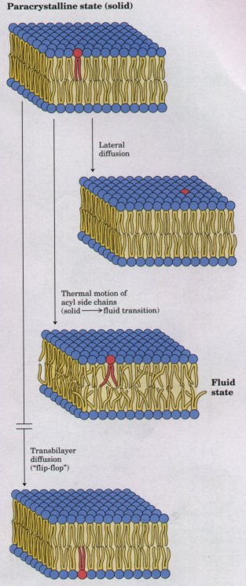 Figure 10-6 Lipid motion within a bilayer includes lateral diffusion of individual molecules within one face of the bilayer, and thermal motion of the fatty acyl groups in the bilayer interior. Because of the thermal motion, the bilayer is fluid above a certain temperature; as the temperature is lowered, lipids become paracrystalline. Flip-flop diffusion is a very uncommon event. |
| Although lateral migration of membrane components and thermal flexing of the acyl chains clearly occurs, a third kind of motion is restricted: transbilayer or "flip-flop" diffusion, the movement of a lipid from one face of the bilayer to the other ( Fig. 10-6 ). For such motion to occur, the lipid head group, which is polar and may be charged, must leave its aqueous environment and move into the hydrophobic interior of the bilayer, a process with a large, positive free-energy change (highly endergonic). During synthesis of the bacterial plasma membrane, for example, phospholipids produced on the inside surface of the membrane must undergo flip-flop diffusion to enter the outer face of the bilayer. There are proteins that facilitate flip-flop diffusion, providing a transmembrane path that is energetically more favorable. | 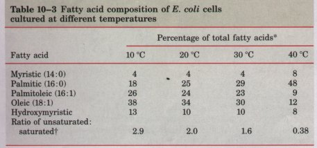 Source: Data from Marr, A.G. & Ingraham, J.L. (19621 Effect of temperature on the composition of fatty acids in Escherichia coli. J. Bacteriol. 84, 1260. * The exact fatty acid composition depends not only on growth temperature, but also on growth stage and growth medium composition. ξThe total percentage of 16:1 plus 18:1 divided by total pereentage of 14:0 plus 16:0. Hydroxymyristic acid was omitted from this calculation. |
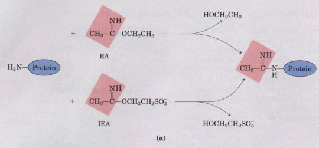
| When individual protein molecules and
multiprotein complexes in freeze-fractured biological
membranes are visualized with the electron microscope
(Box 10-1), some proteins appear on only one face of the
membrane; most span the full thickness of the bilayer,
and protrude from both inner and outer membrane surfaces.
Among the latter are some proteins that conduct solutes
or signals across the membrane. Membrane protein localization has also been investigated with reagents that react with protein side chains but cannot cross membranes (Fig. 10-7). The human erythrocyte is convenient for such studies, because the plasma membrane is the only membrane present. Figure 10-7 Experiments to determine the transmembrane arrangement of membrane proteins. (a) Both ethylacetimidate (EA) and isoethionylacetimidate (IEA) react with free amino groups in proteins, but only the ethyl derivative (EA) diffuses freely through the membrane.(b) Comparison of the labeling patterns with the two reagents reveals whether a given protein is exposed only on the outer surface or only on the inner surface. Proteins labeled by both reagents, but more heavily by the permeant reagent, are exposed on both sides, and thus span the membrane. |
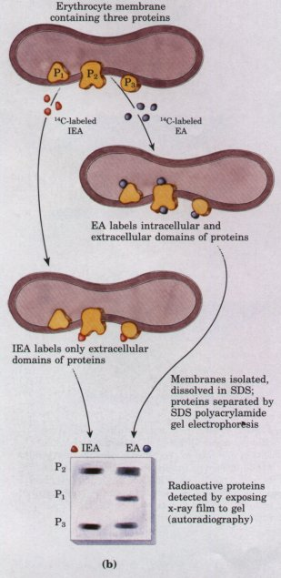 |
| Experiments like those described in
Figure 10-7 show that the glycophorin molecule spans the
erythrocyte membrane. Its aminoterminal domain (bearing
the carbohydrate) is on the outer surface of the
erythrocyte, and its carboxyl terminus protrudes on the
inside of the cell. The amino-terminal and
carboxyl-terminal domains contain many polar or charged
amino acid residues, and are therefore quite hydrophilic.
Homever, a long segment in the center of the protein
contains mainly hydrophobic amino acid residues. These
findings suggest the transmembrane arrangement of
glycophorin shown in Figure 10-8. Figure 10-8 Transbilayer disposition of glycophorin in the erythrocyte. One hydrophilic domain, containing all the sugar residues, is on the outer surface, and another hydrophilic domain protrudes on the inner surface. The red hexagons represent a tetrasaccharide (containing two NeuNAc, Gal, and GalNAc) O-linked to a serine or threonine residue; the blue hexagon represents an oligosaccharide chain N-linked to an asparagine residue. A segment of relatively hydrophobic residues forms an α helix that traverses the membrane bilayer. |
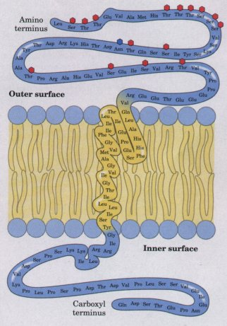 |
B O X 10-1Electron Microscopy of MembranesCombined with different staining procedures and tissue-preparation methods, electron microscopy has revealed important details of membrane structure. Shown here are three different aspects of the erythrocyte membrane, visualized by electron microscopy after three different ways of preparing the cells for examination. 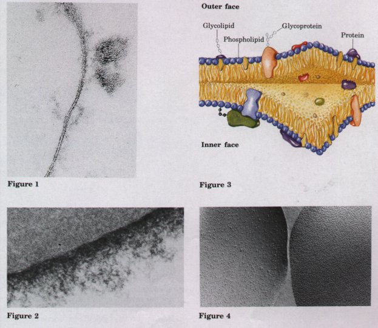 Figure 1 is a transmission electron micrograph of a section through the erythrocyte membrane, showing the two dense lines visible after osmium tetroxide staining of cells, corresponding to the outer and inner polar layers of the membrane-lipid head groups. The clear zone between the lines is the hydrophobic portion of the lipid bilayer, which contains the nonpolar fatty acyl tails. Figure 2 shows the glycocalyx on the outer surface of the erythrocyte, visualized by a special staining procedure. This "fuzzy coat," which consists of hydrophilic oligosaccharide groups of membrane glycoproteins and glycolipids, is over 100 nm thick, more than ten times the thickness of the lipid bilayer itself. A view of the inside of the erythrocyte membrane (illustrated in Figure 3), is produced by the freeze-fracture method. In this procedure the cells are frozen and the frozen block is shattered or split. The fracture lines sometimes split a membrane along a plane between the two lipid layers. The exposed surface is coated with a very thin layer of carbon, then visualized with the electron microscope (Fig. 4). The inside surface of one lipid layer forms the smooth background; the clusters of globular bodies are molecules of integral membrane proteins. |
One further fact may be deduced from the results of the experiments with glycophorin: it does not move from one face of the bilayer to the other; its disposition in the membrane is asymmetric. Similar studies of other membrane proteins show that each has a specific orientation in the bilayer, and that protein reorientation by flip-flop diffusion occurs seldom, if ever. Furthermore, glycoproteins of the plasma membrane are invariably situated with their sugar residues on the outer surface of the cell. As we shall see, the asymmetric arrangement of membrane proteins results in functional asymmetry; all the molecules of a given ion pump, for example, have the same orientation and therefore all pump in the same direction.
Membrane proteins may be divided
operationally into two groups: integral (intrinsic)
proteins, which are very firmly bound to the membrane,
and peripheral (extrinsic) proteins, which are bound more
loosely, or reversibly. Peripheral membrane proteins can
be released from membranes by relatively mild treatments
(Fig. 10-9), and once released from the membrane they are
generally water soluble. In contrast, the release of
integral proteins from membranes requires the action of
agents (detergents, organic solvents, or denaturants)
that interfere with hydrophobic interactions. Even after
integral proteins have been solubilized, removal of the
detergent may cause the protein to precipitate as an
insoluble aggregate. The insolubility of integral
membrane proteins results from the presence of domains
rich in hydrophobic amino acids; hydrophobic interactions
between the protein and the lipids of the membrane
account for the firm attachment of the protein.Some Integral Proteins Have Hydrophobic Transmembrane AnchorsIntegral membrane proteins generally have domains rich in hydrophobic amino acids. In some proteins, there is a single hydrophobic sequence in the middle of the protein (as in glycophorin) or at the amino or carboxyl terminus. Other membrane proteins have multiple hydrophobic sequences, each long enough to span the lipid bilayer when in the a-helical conformation. |
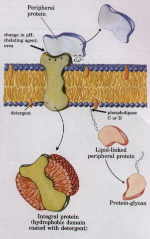 Figure 10-9 Membrane proteins can be distinguished by the conditions required to release them from the membrane. Most peripheral proteins can be released by changes in pH or ionic strength, removal of Ca2+ by a chelating agent, or addition of urea, which breaks hydrogen bonds. Peripheral proteins covalently attached to a membrane lipid, such as through a phosphatidylinositol-glycan anchor (see Fig. 10-3), are released by phospholipase C or D. Integral proteins can be extracted with detergents, which disrupt the hydrophobic interactions with the lipid bilayer, forming micelles with individual nrotein molecules. |
One of the best-studied membrane-spanning proteins, bacteriorhodopsin, contains seven very hydrophobic internal sequences, and crosses the lipid bilayer seven times. Bacteriorhodopsin is a lightdriven proton pump that is densely packed in regular arrays in the purple membrane of the bacterium Halobacterium halobium. When these arrays are viewed with the electron microscope from several angles, the resulting images allow a three-dimensional reconstruction of the bacteriorhodopsin molecule (Fig. 10-10). Seven α-helical segments, each traversing the lipid bilayer, are connected by nonhelical loops at the inner or outer face of the membrane. The amino acid sequence of bacteriorhodopsin has seven segments with about 20 hydrophobic residues, each segment just long enough to make a helix that spans the lipid bilayer. Hydrophobic interactions between the nonpolar amino acids and the acyl side chains of the membrane lipids firmly anchor the protein in the membrane, providing a transmembrane pathway for proton translocation |
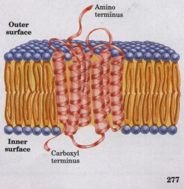 Figure 10-10 The single polypeptide chain of bacteriorhodopsin folds into seven hydrophobic a helices, each of which traverses the lipid bilayer and is roughly perpendicular to the plane of the membrane. The seven transmembrane helices are clustered, and the space around and between them is filled with the acyl chains of membrane lipids. |
Box10-2Predicting the Topology of Membrane ProteinsIt is generally much easier to determine the amino acid sequence of a membrane protein (by sequencing the protein itself or its gene) than to determine its three-dimensional structure. Consequently, only a few three-dimensional structures are known, but hundreds of sequences are available for membrane proteins. The sequences of most integral proteins contain one or more regions rich in hydrophobic residues and long enough to span the 3 nm thick lipid bilayer. An α-helical peptide of 20 residues is just long enough to span the bilayer (the length per residue is 0.15 nm). Because a polypeptide chain surrounded by lipids has no water molecules with which to form hydrogen bonds, it will tend to fold into α helices or β sheets, in which intrachain hydrogen bonding is maximized. If the side chains of all amino acids in a helix are nonpolar, hydrophobic interactions with the surrounding lipids further stabilize the helices.
Many of the transport proteins described in this chapter are believed, on the basis of their amino acid sequences and hydropathy plots, to have multiple membrane-spanning helical regions. These assignments of topology should be considered tentative until confirmed by direct structural determination. 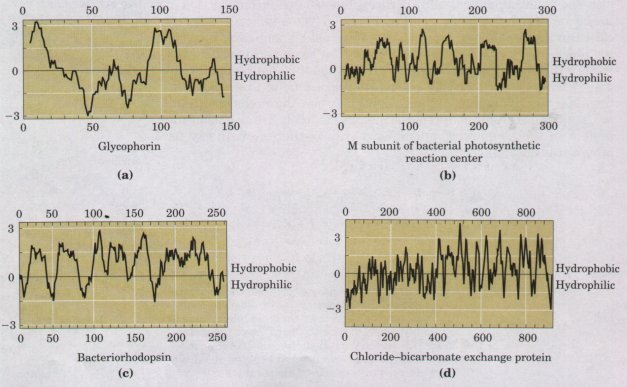 Figure 1 Plots of hydropathy index against residue number for four integral membrane proteins. |
This pattern of seven hydrophobic membrane-spanning helices has proven to be a common motif in membrane structure, seen in at least ten other membrane proteins, all involved in signal reception. Although no information is yet available on the three-dimensional structures of these proteins, it seems likely that they will prove to be structurally similar to bacteriorhodopsin. The presence of long hydrophobic regions along the amino acid sequence of a membrane protein is generally taken as evidence that such sequences traverse the lipid bilayer, acting as hydrophobic anchors or forming transmembrane channels; virtually all integral membrane proteins have at least one such sequence (Box 10-2). When sequence information yields predictions consistent with chemical studies of protein localization (such as those described above for glycophorin and bacteriorhodopsin), the assumption that hydrophobic regions correspond to membrane-spanning domains is better justified.
The same techniques that have allowed determination of the threedimensional structures of many soluble proteins can in principle be applied to membrane proteins. However, very few membrane proteins have been crystallized; they tend instead to form amorphous aggregates. One instructive exception is the photosynthetic reaction center from a purple bacterium (Fig. 10-11). The protein has four subunits, three of which contain α-helical segments that span the membrane. These segments are rich in nonpolar amino acids, and their hydrophobic side chains are oriented toward the outside of the protein, interacting with the hydrocarbon side chains of membrane lipids. The architecture of the reaction center protein is therefore the inverse of that seen in most water-soluble proteins, which have their hydrophobic residues buried within the protein core and their hydrophilic residues on the surface available for polar interactions with water (recall the structures of myoglobin and hemoglobin, for example). The structures of only a few membrane proteins are known, but the hydrophobic exterior of the reaction center protein seems to be typical of integral membrane proteins.
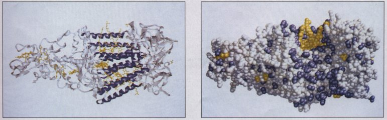
Figure 10-11 Th ree-dimensional structure of the photosynthetic reaction center of a purple bacterium, Rhodopseudomonas uiridis. This was the first integral membrane protein to have its atomic structure determined by x-ray diffraction methods. Eleven a-helical segments from three of the four subunits span the lipid bilayer, forming a cylindel 4.5 nm long, with hydrophobic residues on the exterior, interacting with lipids of the bilayer. In the ribbon representation at left, the residues that are part of the transmembrane helices are shown in purple. The high density of nonpolar residues in the region of the bilayer is illustrated in the spacefilling model on the right, in which the four very hydrophobic residues (Phe, Val, Ile, Leu) are shown in purple. In both views, the prosthetic groups (light-absorbing pigments and electron carriers; see Fig. 18-47) are shown in yellow.
Many peripheral proteins are held to the membrane by electrostatic interactions and hydrogen bonding with the hydrophilic domains of integral membrane proteins, and perhaps with the polar head groups of membrane lipids. They can be released by relatively mild treatments that interfere with electrostatic interactions or break hydrogen bonds (see Fig. 10-9). These peripheral proteins may serve as regulators of membrane-bound enzymes, or as tethers that connect integral membrane proteins to intracellular structures or limit the mobility of certain membrane proteins.
Lipids attached covalently to certain membrane proteins (see Fig. 10-3) anchor these proteins to the lipid bilayer by hydrophobic interactions. Proteins thus held can be released from the membrane by the breakage of a single bond; the action of phospholipase C or D, for example, frees the membrane protein from the hydrophobic portion of a phosphatidylinositol "anchor" (see Fig. 10-9). It seems likely that this type of quick-release mechanism gives cells the capacity to change their membrane surface architecture rapidly, or to alter the subcellular localization of proteins that shuttle between membrane and cytosol.
.Although these
proteins with lipid anchors resemble integral membrane
proteins in that they can be solubilized by detergent
treatment, they are generally considered peripheral
membrane proteins on the basis of their other properties:
their association with the membrane is often weak and
reversible, they do not contain long hydrophobic
sequences, and once solubilized (by phospholipase action,
for example), they behave like typical soluble proteins.Membrane Proteins Diff-use Laterally in the BilayerMany membrane proteins behave as though they were afloat in a sea of lipids. We noted earlier that membrane lipids are free to diffuse laterally in the plane of the bilayer, and are in constant motion. The experiment diagrammed in Figure 10-12 shows that this is also true of some membrane proteins. Other experimental techniques confirm that many but not all membrane proteins undergo rapid lateral diffusion, but there are many exceptions to this generalization. Some membrane proteins associate with adjacent membrane proteins to form large aggregates ("patches") on the surface of a cell or organelle, in which individual protein molecules do not move relative to one another. Acetylcholine receptors (p. 292) form dense patches at synapses. Other membrane proteins are anchored to internal structures that prevent their free diffusion in the membrane bilayer. In the erythrocyte membrane, both glycophorin and the chloride-bicarbonate exchanger (p. 286) are tethered from the inside to a filamentous cytoskeletal protein, spectrin (Fig. 10-13). |
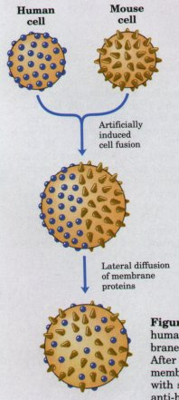 Figure 10-12 The fusion of a mouse cell with a human cell results in the randomization of membrane proteins from the mouse and the human cell. After fusion of the cells, the location of each type of membrane protein is determined by staining cells with species-specific antibodies. Anti-mouse and anti-human antibodies are specifically tagged with molecules that fluoresce with different colors. Observed with the fluorescence microscope, the colored antibodies are seen to mix on the surface of the hybrid cell within minutes after fusion, indicating rapid diffusion of the membrane proteins throughout the lipid bilayer |
| Although membranes are stable, they are by no means static. The fluid mosaic structure is dynamic and flexible enough to allow fusion of two membranes. Within the endomembrane system described in Chapter 2 (see Fig. 2-10) there is constant reorganization of the membranous compartments, as small vesicles bud from the Golgi complex carrying newly synthesized lipids and proteins to other organelles and to the plasma membrane. Exocytosis, endocytosis, fusion of egg and sperm cells, and cell division all involve membrane reorganization in which the fundamental operation is fusion of two membrane segments without loss of continuity (Fig. 10-14) | 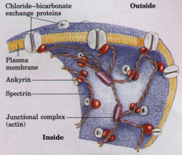 Figure 10-13 The chloride-bicarbonate exchange protein of the erythrocyte spans the membrane and is tethered to the cytoskeletal protein spectrin by ankyrin, limiting lateral mobility. Ankyrin contains a covalently bound palmitoyl side chain (Fig. 10-3), which may hold to the membrane. Spectrin is a long, filamentous protein that forms a network attached to the cytoplasmic face of the membrane, thereby stabilizing it against deformation in shape. |
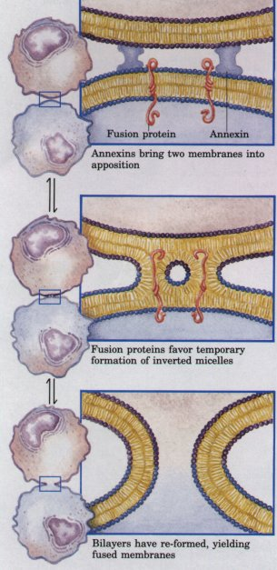 Fignre 10-15 One plausible model for membrane fusion. The inverted micelles shown here are only one kind of nonbilayer structure that might be assumed by membrane lipids. When the lipids revert to bilayer structures, either the original structure (top) or the fusion product (bottom) can form. The fusion proteins may act by favoring the formation of the nonbilayer intermediate. |
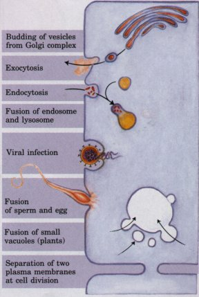 Figure 10-14 Membrane fusion is central to a variety of cellular processes, involving both organelles and the plasma membrane. |
To fuse, two membranes must first approach each other within molecular distances (a few nanometers). Much evidence suggests that an increase in intracellular Ca2+ concentration is the signal for certain fusion events such as exocytosis. Annexins are a family of proteins located just beneath the plasma membrane. They bind avidly to the head groups of phospholipids in bilayers, but only in the presence of Ca2+. Some annexins also associate with specific intracellular vesicles fated for exocytosis. These proteins cause clumping of liposomes in vitro, presumably by cross-linking lipid molecules of two different vesicles. In one simple model of membrane fusion (Fig. 10-15), annexins hold two membranes in close and stable apposition in the first step of fusion.
Another family of proteins believed to act in fusion is the fusion proteins, which are typified by the integral membrane protein HA, essential for the entry of the influenza virus into host cells (Fig. 10-14). (Note that these "fusion proteins" are unrelated to the products of two fused genes, also called fusion proteins, discussed in Chapter 28.) Like most other fusion proteins, the H A protein contains two regions rich in nonpolar amino acids, one a typical membrane-spanning domain, the other (the "fusion peptide") rich in Ala and Gly residues. The fusion protein may bridge the two membranes, with its membrane-spanning domain in one membrane and the fusion peptide inserted into the other (Fig. 10-15).
Fusion proteins may bring about transient distortions of the bilayer structure in the region of fusion. Physical studies of pure phospholipids in vitro have shown that several nonbilayer structures, such as inverted micelles, can form under some circumstances. In the model illustrated in Figure 10-15, an alternative structure exists in equilibrium with the bilayer, and represents the transition structure between unfused and fused membranes. Fusion proteins are believed to favor the formation of the transition structure, thus easing the phospholipid reorganization that results in fusion. In addition to annexins and fusion proteins, several, perhaps many, other proteins are probably involved; the machinery for fusion may be much more complex than implied by the simple model described here.